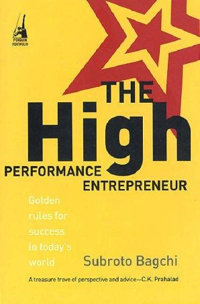

Library › Business & Startups
The High-Performance Entrepreneur — Summary & Key Lessons

Everyone tells you how to start a company. Nobody tells you how to build one that deserves to outlive you.
📖 OPEN THE FULL INTERACTIVE BREAKDOWN →🌐 Read it in Hindi, Hinglish, Gujarati, Tamil & 22 more languages — free, with audio.
💡 The Big Idea
Written before India's unicorn era, this book argued that the real achievement is not the exit but building a great company that endures: with governance, brand, culture, professional management and the guts to say no to shortcuts. Through MindTree's founding story (the name hunt, the funding, the first client, the first crisis) and dozens of founder interviews, Bagchi lays out the unglamorous architecture of permanence: compensation design, board creation, values that cost you something, and the psychology of not selling too early.
🧠 The 8 Key Lessons
Lesson 1: Decide What You Are Building Before the Money Asks
Flip or Build
The founding decision is the endgame: a build-to-flip company optimizes for narrative and metrics that acquirers love; a build-to-last company optimizes for institutions (brand, governance, talent depth) that take years to matter. Investors will push you toward their preferred endgame. Founders who have not decided internally get whipsawed, and companies built in the middle die in the middle.
📖 Example: MindTree's founders explicitly told investors they were building a long-term institution with possible IPO, shaping which VCs came in and filtering out those seeking a fast trade sale, alignment set before the wire transfer. Read the full example →
⚡ Do this: Write your endgame sentence tonight and put it in your pitch deck. Funding whose implied endgame differs from yours is a mortgage on your future decisions.
Lesson 2: The Founding Team Is the First Product
Complementarity Over Friendship
Great founding teams pair complementary skills (technology, market, operations) with aligned values, and spend as much design on equity, roles and decision rules as on the product. Friendship is common in founding teams; role clarity and conflict protocols are rare. The companies that survive their first real crisis had disagreeing mechanisms designed while everyone still liked each other.
📖 Example: MindTree's ten founders split cleanly into technology (N.S. Raghavan, Anjan Lahiri and others) and market-facing (Bagchi) roles, with a defined first-among-equals chairman in Ashok Soota, so ambition had lanes instead of collisions. Read the full example →
⚡ Do this: Draft your founding charter: who owns which decision domain, how deadlocks resolve, what triggers a buyout. Sign it in the honeymoon phase.
Lesson 3: Name, Brand and Space: Choosy Details That Compound
The Name Hunt
Bagchi dedicates entire chapters to naming MindTree and designing its first office, because identity signals set culture before strategy does. A global name with a good story, a space that reflects aspiration without waste: these compound into brand equity and hiring magnetism. Founders who treat identity as vanity miss how much early talent decides from signals.
📖 Example: The name MindTree came from a weeks-long global search and a $3,000 prize to a 22-year-old in Singapore, teaching the company from birth that good ideas outrank hierarchy; the campus design echoed the flat, open culture. Read the full example →
⚡ Do this: Audit your company's identity signals (name, space, website, first email): would a world-class hire join you on their evidence? Fix the weakest signal this month.
Lesson 4: Say No to Business That Breaks Who You Are
The Discipline of Refusal
High-performance companies define what they will not do: no body-shopping, no ethically grey clients, no out-of-focus revenue. Refusal is expensive early and priceless later: it forces focus, protects culture and builds a reputation with premium clients. The compounding of consistency is invisible until year five, when your pipeline fills with clients who chose you for your spine.
📖 Example: MindTree's early no to low-margin maintenance contracts pushed it toward harder product-engineering work that later differentiated it from body shops, and its ethics record made it a preferred partner for quality-obsessed clients. Read the full example →
⚡ Do this: Write your refusal list (client types, deal structures, revenue you will decline). Post it where your sales team argues with it weekly.
Lesson 5: Compensation Design Is Culture Design
Paying People in Meaning and Money
How you pay decides who stays and what they optimize. Bagchi covers ESOP humility (wealth creation without entitlement culture), pay-for-performance without teamwork poison, and transparency norms. Startups copy Valley compensation without designing the behaviors it purchases; the result is mercenary churn exactly when perseverance is needed.
📖 Example: MindTree's ESOPs made many employees wealthy at IPO, but the culture had spent years teaching ownership as responsibility; alumni frequently cite the values more than the windfall, evidence the design worked. Read the full example →
⚡ Do this: Write down the behavior your current compensation most rewards. If it is not the behavior your strategy needs, redesign the incentive before you redesign the poster.
Lesson 6: Build the Middle Before You Need It
The Second Line
Founders concentrate capability; institutions distribute it. The second line (leaders who can run the company minus you) must be built years before succession or scale forces the issue: through deliberate delegation, rotation across functions, and letting them fail safely on small bets. Companies that build benches late discover their stars were only ever good at following orders.
📖 Example: MindTree rotated high-potentials across delivery, sales and geographies in their thirties, producing leaders who later ran business units and the company's largest P&Ls without founder babysitting. Read the full example →
⚡ Do this: Name your second line today. Give each one a decision they currently cannot make without you, and transfer it this quarter with a safety net.
Lesson 7: Crisis Is the Culture Audit You Cannot Schedule
The First Real Crisis
Every company meets its first existential crisis: lost anchor client, founder conflict, market collapse. What happens next is pure culture: who stays, who blames, what gets cut, whether values cost money when money is scarce. Founders should pre-write crisis doctrine (communication cadence, what is protected, who decides) because it cannot be improvised with integrity.
📖 Example: MindTree survived the 2001 dot-com winter (founded months before the crash) partly because founders took pay cuts visibly, communicated weekly, and protected training budgets, turning crisis into a retention story that outlived the downturn. Read the full example →
⚡ Do this: Write your one-page crisis doctrine today: what gets protected first, what gets cut first, who communicates what weekly. Sign it while nothing is on fire.
Lesson 8: Legacy Is a Design Input, Not an Obituary
Building for the Day You Leave
The book's quiet climax: founders who build with departure in mind (documented processes, empowered second line, governance beyond personalities) make companies that attract better talent, better clients and better investors now, not just later. Permanence is not about ego monuments; it is about building a machine that keeps promises when the promisors are gone.
📖 Example: MindTree was eventually acquired by Larsen & Toubro in 2019 at a much larger scale, but its culture and leadership pipeline outlived founder transitions for years, the test Bagchi's book set out to pass. Read the full example →
⚡ Do this: Ask: if I vanished for a year, what breaks first? Fix that thing this year, then repeat annually until the answer is nothing.
✅ 5-Step Action Plan
- Declare your endgame (build forever, IPO, or sale) in writing and align your funding to it.
- Sign a founding charter covering decision domains, deadlocks and exit triggers.
- Create a refusal list of business you will decline to protect focus and values.
- Redesign compensation to purchase the exact behaviors your strategy requires.
- Build your second line with real delegated decisions starting this quarter.
⚠️ When This Doesn't Work
The book is a love letter to durable institution-building; founders in winner-take-all markets may justly prioritize speed over the architecture described here. Examples lean on IT services economics of the early 2000s. Also note the irony the market later wrote: MindTree itself was acquired, endurance has a price and a seller. Use the disciplines, but choose your own endgame honestly.
💀 The Graveyard Proves It
📺 Videocon — From India's Electronics King to ₹80,000 Crore in Debt. Burn: ₹80,000+ crore debt; the dhoti-to-empire story ends in insolvency. Read the full case study →
💬 Best Quotes from The High-Performance Entrepreneur
- “A company is a promise that must outlive its founders.”
- “Values that cost nothing are decoration, not values.”
- “Build as if you will hold it forever; run it as if you will sell it tomorrow.”
Interactive version: mark lessons as read, listen in your language, share quote cards.